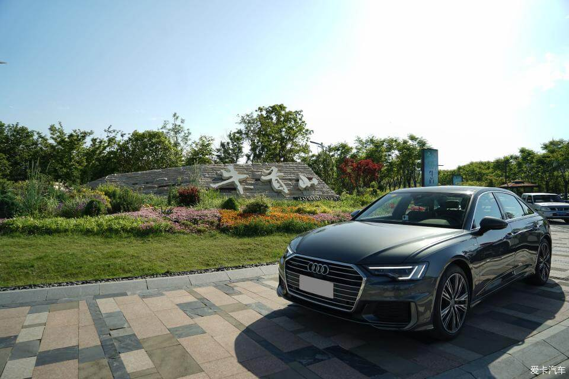

历史的见证，传奇的延续，在金陵遇见“你”
2019-05-10 09:47一水护田将绿绕，两山排闼送青来。
五月的金陵春意黯然，少了几分寒意，多了许多阳光。我也在这等来了从宁波赶来的小伙伴。我也很荣幸能够参加这次的奥迪A6L的长测活动，我参与的是南京到徐州这段旅程。
作为一个“本地人”，小伙伴来到了南京，肯定得带他们转转六朝古都。虽然五一小长假的南京人潮涌动。夫子庙，中山陵更是水泄不通。但是来了，我必须尽地主之谊。
本日第一站：牛首山

结束了四月末的阴雨连绵，在五一小长假迎来了阳光明媚
俗话说“春牛首，秋栖霞”，春光大好的五一怎么能不来牛首山。我必须带他们来感受一下南京人的节假日
先给A6L和牛首山来一个合影，阳光下的天云灰显得很有质感，六边形的“大嘴”少了几分圆润，多了几分气势。或许很多人没法习惯这样风格大转变，但是我在我看来这次的改款真的很成功。镀铬中网和天云灰的车身颜色搭配在一起无比的协调
侧面相比上一代多了些层次感、力量感。腰线和下部的线条从不同的角度去看会有不同的效果。丝毫不会给你冗余的感觉。
本来还想带他们去爬山，结果刚提了一句他们立马拒绝。说这一路爬了太多山了。想想也是。还是带他们转转，放松一下吧。
本日第二站：中山码头
1910年随津浦铁路贯通由浦口市场局于民间筹资开办，航线由下关至浦口，称“关浦线”。现在虽然交通工具选择多了，但是中山码头依旧是人来人往，早晚的轮渡还是有许多人。尤其是老浦口的人还是会选择轮渡过江。也有为了体验轮渡而来乘坐的人。
民国建筑和现代科技的同框
历史和现代的合照，幕墙的颜色和天云灰如此的一样。当汽车还没普及的时候，轮渡成为当时南京人过江的主要方式之一。那时私家车还不是家家户户都可以拥有的，更别说奥迪了。但是随着国家的发展，汽车逐渐变得不再那么高不可攀，奥迪也不再那么遥远。轮渡渐渐退出了历史舞台，中山码头是为数不多的南京现在还在运营的客运码头了。奥迪A6L在国内市场拼搏，也成为了同级别的“大佬”
第三站：浦口火车站
早已没了昔日的人潮涌动
经历了城区道路的拥堵、通畅，还有郊区的坑洼小道，我们到了浦口火车站。这一小段路，我充分体验了它如丝般顺滑的换挡，还有充足的动力储备。当然了还有不少的回头率。
这已经成了南京一个网红地点，这不你看旁边一个小姐姐在拍照。奥迪的LED大灯真是名不虚传。说实话你看像不像钢铁侠的眼睛。
岁月在墙上留下了明显的痕迹，“食堂招待所”几个字已经褪去了原来的红色，“招”字也掉了。原来的大门、窗户都已经被封起来了。路边的梧桐树还健在，依旧见证着历史。
这次长测的是一台45TFSI quattro动感型的A6L，19寸的轮毂在这个级别的车型上显得过于小气，所以这就必须得是20寸的轮毂了，台车就是！双5幅的20寸轮毂优雅又不失动感。
结束了绕开人流之旅，我们找了个地方给小6来了一组证件照。
请注意高能来袭！
这样的A6L是不是显得很年轻，很运动。
画风一转，这样看起来又很商务
它有一双迷人的“大眼睛”，白天很迷人，夜晚可以为你照亮回家的路

腰线延伸到车尾，看着不仅有力量感，而且层次感十足（前面提到，这样看是不是更明显）
45 TFSI告诉你我不是善类，quattro告诉你我很稳。

科技范十足的内饰，液晶仪表，中控双屏，三屏联动，给你无线操作的空间。而且中控操作有触控反馈，让你不再怀疑你的手指，新MMI操作无比流畅，让你快速上手，不会有一丝一毫的不适。
全新的电子档把，握持感很好，而且当你在行车过程中还可以把手放在档把上，没有任何不舒服。真的很顺手。当年新A4L上市后试驾后我就对这档把爱上了，“大鸡腿”什么的都是浮云。
奥迪虚拟驾驶座舱系统可谓是一绝。任何信息都可以在这里找到。当然了，设置还得是在中控。
双色座椅、门把手处的翻毛皮内衬、平底方向盘，从左到右贯穿的亮黑饰板等无处不在彰显着与众不同，高冷的内饰与双拼色座椅搭配，瞬间提升运动气息，不会再有人把你当成司机。
“灯厂”并非浪得虚名。全系标配的LED大灯，辨识度超高的日间行车灯、这代的大灯也不再那么圆润，而是有棱有角。与中网、前脸的线条一气呵成。
后排独立空调在这个级别上不是啥新鲜的，但是我想说的是这个控制面板。太帅了！
夜晚，quattro标志在氛围灯下显得格外引人注目
新款A6L的氛围灯也是吸引我的一个点，自带多种方案给你选择，还可以个性化定制，选择适合你自己的颜色！
2.0T涡轮增压发动机，可以输出224匹马力，7速双离合变速箱，再加上48V轻混系统。让你在日常正常驾驶时都感受不到换挡的顿挫，无比顺滑。但是当你想要加速超车深踩下油门变速箱会给你快速的响应，马上连降两档。动力瞬间输出，再加上quattroultra的配合，让你无比的放心。有时候车辆的状态很优秀，也会让驾驶者无形中增添很多信心。
由于单车，所以图片是没法拍啦，但是驾驶感受可以简单的说一下。对于这个级别的车静音性、底盘舒适性都是毋庸置疑的。相比上一代A6L也有不小的进步。2.0T224匹马力可以让你在高速上游刃有余，无论是超车还是正常驾驶。从南京到徐州400公里不到，花了四个多小时，将近五个小时。一路上很顺畅，路况也不错。但是到了徐州，由于修路路况变得差了，这台车没有让我失望，底盘调校的偏舒适。滤震效果很优秀，但是还会给你一定的路面反馈，让你清楚地知道目前行驶路况到底怎么样。关于油耗，我特意也关注了一下，这趟从市区到上高速再到进入市区。综合油耗在8.8左右。对于这样一台车，而且还是2.0T高功率版的车型，我可以说相当满意了。你们呢？
这次长测南京到徐州段就这么快的结束了。我也该坐上回城的高铁了。不说了，回家想把手上的迈旅换成A6L了。真的让我动心了，哈哈